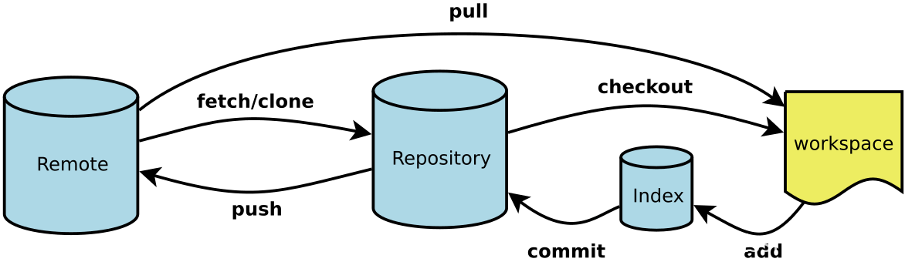

Git
断断续续地使用了git的部分功能，稍稍做一些系统性的整理
理解
git 是一个分布式版本控制系统，即每个人的本地都是一个完整的版本库，可以进行版本控制。
而且git的版本库记录的不是每个文件的增量，而是所有文件的快照，这样可以方便地进行版本回退。
常用git一般是通过一个远程仓库来进行协作，每个人都可以从远程仓库克隆一份到本地，然后在自己的分支上进行修改，最后再推送到远程仓库，通过冲突处理合并到主分支。（~~或者当成远程备份库~~）
git架构

-
workspace：工作区，实际工作目录
-
index：暂存区，通过add添加
-
repository：版本库
-
remote：远程仓库
-
branch：分支
-
HEAD：指向当前分支的指针
-
origin：默认远程仓库
-
master: 默认主分支
常用命令
-
git pull
约等于 git clone + git merge,一般用于将远程仓库克隆到本地
-
git push (-u)
将本地的仓库（repository）推送到远程仓库的分支上，-u参数表示将本地分支与远程分支关联起来
-
git add
将工作区的文件添加到暂存区（index）
-
git commit -m
将暂存区的文件提交到本地仓库（repository） message是提交的说明，一般是对本次提交的精简描述
-
git init
初始化一个本地仓库
-
git clone
将远程仓库克隆到本地
-
git branch
查看分支 -a 查看所有分支 -r 查看远程分支 -d 删除分支 后加分支名可新建分支
-
git checkout
（新建且）切换分支
-
git merge
将
分支合并到当前分支 -
git rebase
将当前分支的提交记录移动到
分支的最后 使得提交记录更加清晰
常用操作
- 新建一个本地仓库并与远程仓库关联
git init
git remote add origin <url>
git pull origin master
...
git add *
git commit -m "..."
git push -u origin master
- 从远程仓库克隆到本地
git clone <url>
- 从远程仓库拉取分支并完成合并
git pull origin <branch>
git merge <branch>
git add *
git commit -m "..."
git push -u origin master